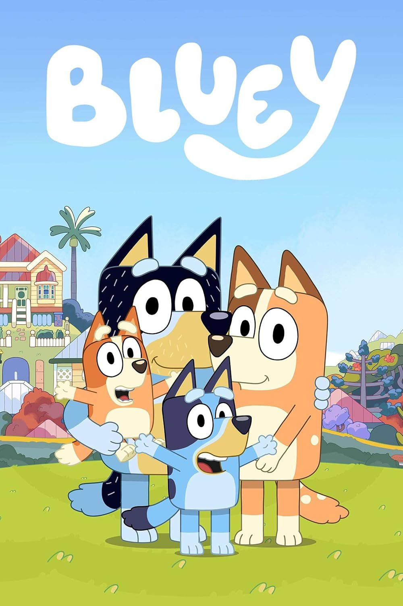

Bluey is an Australian animated preschool television series which premiered on ABC Kids on 1 October 2018. The program was created by Joe Brumm and is produced by Queensland-based company Ludo Studio. It was commissioned by the Australian Broadcasting Corporation and the British Broadcasting Corporation, with BBC Studios holding global distribution and merchandising rights. The series made its international premiere on Disney Junior in the United States and is released widely on Disney+.
The show follows Bluey, an anthropomorphic six-year-old (later seven-year-old) Blue Heeler puppy who is characterised by her abundance of energy, imagination and curiosity about the world. The young dog lives with her father, Bandit; mother, Chilli; and younger sister, Bingo, who regularly joins Bluey on adventures as the pair embark on imaginative play together. Other characters featured each represent a different dog breed. Overarching themes include the focus on family, growing up, and Australian culture. The program was created and is produced in Queensland; its capital city Brisbane inspires the show's setting.
